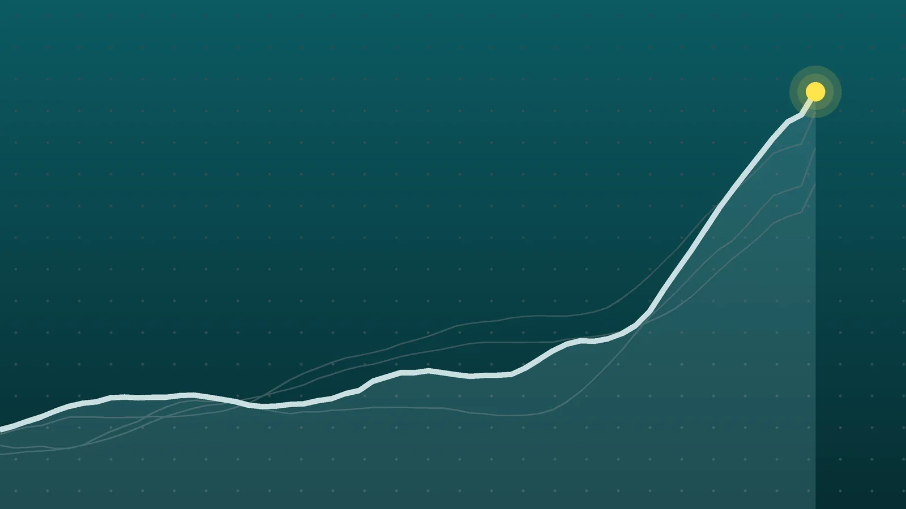

WorldExplainer
France Protests: 320,000 March on a 3rd Weekend as Unrest Spreads
Turnout has fallen each Saturday by the official count, but the movement is not fading on its own terms. Students now plan school blockades and a union-led march on Nov. 5, and similar youth protests have spread across Europe.

Quick take
- Authorities counted 320,000 marchers nationwide on Oct. 31, including 70,000 in Paris; organizers said nearly half a million.
- The Interior Ministry said at least 290 people had been arrested by Saturday evening, with about 70,000 police and gendarmes deployed.
- Official turnout has fallen from about 550,000 on Oct. 17 to 410,000 on Oct. 24 and 320,000 on Oct. 31.
- Students plan school and university blockades from Tuesday, Nov. 3, and a union-called demonstration on Thursday, Nov. 5.
Why it's trending A third straight Saturday of nationwide marches on Oct. 31 drew 320,000 people by official count, with clashes in Paris and Lyon and parallel youth protests in Germany and Spain.
What happened on Oct. 31
The France protests filled the streets for a third straight Saturday on Oct. 31. Authorities counted 320,000 marchers nationwide, including 70,000 in Paris, Al Jazeera reports. The coalition of student groups and unions behind the marches said nearly half a million took part, 200,000 of them in the capital.
The Interior Ministry said at least 290 people had been arrested by the evening, with about 70,000 police officers and gendarmes on duty. Most marches were calm, but police fired tear gas in Paris and Lyon. In Paris, a peaceful march turned rough near its endpoint, where bins and street furniture were set on fire. On the city’s outskirts, masked people dressed in black tore up paving stones and threw them at officers, according to AFP, and police answered with tear gas and baton charges.
Elsewhere, demonstrators clashed with police in Marseille, and in Toulouse police turned a water cannon on an unauthorized march of several thousand mostly young people, AFP reports. Marches in Nantes and Lille stayed peaceful, and some protesters came in Halloween costumes.
How Paris prepared
Interior Minister Laurent Nuñez had warned of a “very high risk” of disorder, especially after dark on Halloween. Paris police kept union and yellow vest marchers out of the city center and allowed one route along the outer boulevards, from Porte de Bagnolet to Porte de Charenton, the Associated Press reports. Unions and students took the restrictions to court, and the main march ended up on the eastern edge of the city after a last-minute legal fight.
Place de la République and Les Halles, both looted on Oct. 17, were closed overnight from 11 p.m. to 6 a.m. on Saturday and Sunday. Unaccompanied minors faced a 9 p.m. curfew around the Champs-Élysées, even though a Paris court had suspended an earlier curfew on minors on Wednesday, finding it an illegal limit on freedom of movement.
Three weekends compared
| Oct. 17 | Oct. 24 | Oct. 31 | |
|---|---|---|---|
| Official turnout | About 550,000 | 410,000 | 320,000 |
| Organizers’ count | Not reported here | About 800,000 (CGT) | Nearly 500,000 |
| Police and gendarmes | Not reported | About 70,000 | About 70,000 |
| Arrests | More than 2,000 | More than 1,300 (AP’s later count) | At least 290 (first count) |
By the official numbers, turnout has dropped about 42% in two weeks, from roughly 550,000 to 320,000. Arrests have fallen faster, though the Oct. 31 figure is an early tally and earlier weekends’ totals kept rising for days. The organizers’ counts run far higher than the government’s, a long-standing pattern in France that lets each side tell its own story about whether the movement is growing or shrinking.
What the protesters want
The movement began in September with high school students angry about run-down schools, teacher shortages and a university admissions system they see as unfair to poorer students. Unions, university students and yellow vest veterans have since joined, and fuel and food prices are now as central as classrooms. After the police crackdown and serious injuries to some protesters, the demands have widened to include civil liberties and the right to protest, AFP reports.
The government says it has heard them. Prime Minister Sébastien Lecornu met student unions several times this week and is weighing steps to ease the cost of living, according to Al Jazeera. Room to spend is tight: AFP notes France is close to recession and under pressure to cut its debt. Most marchers condemned the violence, Al Jazeera reports, but many said they no longer trust the government to listen.
Not just France
Youth-led protests have spread across Europe, organized largely online:
- Germany: thousands marched on Oct. 31, and police in Cologne used a water cannon. Organizers said 170,000 people had registered for rallies in more than 30 cities over living costs, education cuts and plans for military conscription, Al Jazeera reports.
- Spain: police in Barcelona went to their highest alert level after rioting on Oct. 24 led to about 130 arrests, mostly of minors.
- Italy: police stayed on alert after clashes in Milan, Turin and Bologna.
- Elsewhere: calls to protest circulated on TikTok in Belgium, the Netherlands, Austria, Switzerland and Portugal, according to AP.
Who says what
- The government blames ultra-left groups for the violence. Before the Oct. 31 marches, an aide to Nuñez said police were ready for unrest on the scale of Oct. 17, and Nuñez said authorities had spotted online calls for Halloween gatherings urging a “revolution.”
- Students and unions challenged the march bans in court and say they will keep up the pressure until they see concrete measures.
- Jean-Luc Mélenchon, the far-left presidential candidate, joined the Paris march and accused the government of growing more authoritarian, AFP reports.
- Business owners are worried, according to Alain Di Crescenzo, who heads the national chamber of commerce. Shopkeepers in Paris boarded up storefronts again.
What happens next
- Tuesday, Nov. 3: students plan to begin blockading high schools and universities.
- Thursday, Nov. 5: a second round of blockades, followed by a demonstration called by workers’ unions.
- The arrest count for Oct. 31 is likely to be revised as reports come in.
- The 2027 election: the presidential vote is less than six months away. Macron can’t run again, and far-right leader Marine Le Pen leads the polls, so every camp is treating these weekends as part of the campaign.
Quick answers
Why are people protesting in France?
The movement started with students angry about crumbling schools, teacher shortages and the university admissions system. It has grown into a wider protest over the cost of living and, more recently, over policing and the right to protest.
How many people protested in France on Oct. 31?
Authorities counted 320,000 nationwide, including 70,000 in Paris. Organizers said nearly half a million took part.
Are more protests planned in France?
Yes. Students plan school and university blockades starting Tuesday, Nov. 3, and a union-called demonstration on Thursday, Nov. 5.
Sources
- Al Jazeera Tension and clashes as hundreds of thousands protest again in FranceOct. 31, 2026
- Associated Press via ABC News France heads into weekend protests as youth-led rallies sweep EuropeOct. 31, 2026
- AFP via Hespress English Police fire tear gas as thousands march in FranceOct. 31, 2026
- Associated Press via PBS NewsHour More than 400,000 protest across France, challenging Macron as Paris clashes eruptOct. 24, 2026
- Al Jazeera Hundreds of thousands protest in France amid heightened police securityOct. 24, 2026
- Fox News Protests, marches unfolding across French cities as police seek to contain violenceOct. 24, 2026